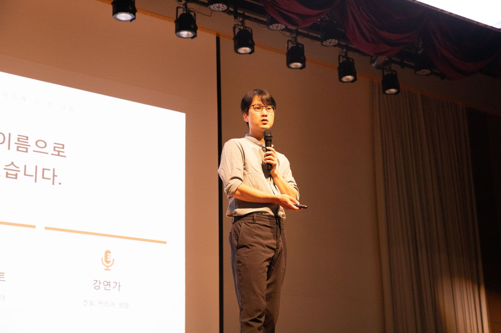

밤에는 동물병원에, 낮에는 강연장에
지금도 두 번 출근하는 사람이 이야기합니다
20년 가까이 임상 수의사로 일하고 있습니다. 마흔에 번아웃으로 제 병원을 정리했고, 그 자리에서 책을 읽고 글을 쓰기 시작했습니다. 지금은 수의사와 작가·강연가를 함께 하며 다섯 권의 책을 냈고, 전국 학교와 기업·기관에서 진로와 커리어를 이야기합니다. 그만두고 떠난 사람의 이야기가 아니라, 지금도 현장에서 두 가지 일을 살아내고 있는 사람의 이야기입니다.

부산영상예술고 진로 특강 — 전교생 414명왜 박근필인가
강연자는 많습니다. 아래 셋은 흔치 않습니다.
직접 건너온 사람
직업 전환을 책으로 배운 사람이 아니라 실제로 통과한 사람입니다. 번아웃, 폐업, 마흔의 재시작까지 — 말할 수 있는 것이 이론이 아니라 경험입니다. 청중이 가장 먼저 알아채는 차이입니다.
공적으로 검증된 강사
부산시교육청 영재교육진흥원이 교사를 대상으로 하는 직무연수 강사로 섭외했습니다. 부산시청 공무원 200여 명 특강, 경향신문 인터뷰, 방송 출연까지 — 검증을 외부에서 받았습니다.
말하기가 본업인 사람
AI가 글은 대신 써 줍니다. 그러나 사람 앞에 서서 눈을 맞추고 주고받는 말은 대신하지 못합니다. 2년간 60여 명을 직접 인터뷰해 온 진행자입니다. 카메라 앞에서도, 550명 강당에서도 흔들리지 않습니다. 원고를 읽는 강연이 아니라 청중과 주고받는 강연을 합니다.
다시 부르고, 다른 곳에 소개합니다
강연이 좋았는지는 제가 말할 수 없습니다. 부른 쪽이 하는 행동으로 드러납니다.
기회가 기회를 부르고, 사람이 사람을 부르고, 경력이 경력을 부릅니다.
첫 수업만 보고 6회를 더 맡긴 도서관
혁신어울림 작은도서관 여름 강좌 1회차를 마친 이틀 뒤, 도서관에서 먼저 하반기 6회 강좌를 제안했습니다. 네 번의 수업을 다 지켜보기도 전에 결정한 것입니다.
이듬해 같은 학교가 다시
부산여중(2025→2026), 김해 수남중(2025→2026), 대명여고(2025→2026). 담당 선생님이 바뀌어도 학교가 다시 부른 경우입니다.
교육청 연수는 동료 추천으로 열렸습니다
부산광역시교육청 영재교육진흥원 교원 직무연수 섭외 당시, 어떻게 알고 연락했는지 물었습니다. 돌아온 답은 “동료 연구원 선생님께서, 요즘 특강하시는 핫한 분이시라고 추천을 해줬다”였습니다.
기관이 기관에 건넨 이름
김해서부청소년센터가 개관 1주년 청소년 진로 멘토링에 저를 부른 경로는 김해진로교육지원센터의 소개였습니다. 소개는 소개하는 쪽이 자기 이름을 함께 얹는 일이라, 어지간해서는 하지 않습니다.
※ 모든 곳이 다시 부르지는 않습니다. 다만 다시 부른 곳과 소개해 준 곳이 꾸준히 있다는 것, 그것이 제가 내놓을 수 있는 가장 정직한 근거입니다.
수강생이 남긴 말
김해율하도서관 「추억과 이별을 쓰는 펫로스 치유 글쓰기」 4주 과정을 마친 뒤 받은 후기입니다.
“너무 좋았습니다. 처음엔 많이 울었는데 쓰다보니 행복한 기억들이 쓰나미처럼 밀려와서 행복했었습니다. 4회차 동안 진행해주신 작가님께 감사드리고 이런 소중한 프로그램을만들어주신 사서님께도 감사합니다.”
“강아지에 대해 얘기나눌 시간이 없는데 내가 유별나지않다는 걸 알게되고, 진짜 힐링되는 시간이었어요. 수의사님이셔서 더 얘기가 잘통하고 수업오는시간이 기다려졌어요. 뜨거운여름날 이겨내고 오고싶은 수업이었어요. 행복했어요!”
“마침 평일에 시간이 있어서 신청하게 되었는데 장기적으로 했으면 하는 마음이 들 만큼 좋은 시간이었습니다. 나중에 또 이런 비슷한 강좌가 생기면 신청하고 싶습니다. 여러모로 따뜻한 시간이 되었던 것 같습니다. 감사합니다^_^”
“참 좋았어요! 애완견주로서 다정한 생각을 정리할 수 있게돼 자기정화를 가질 수 있는 시간이었습니다.”
“힐링되고, 즐거운 시간이었어요.”
※ 강좌 종료 후 도서관 설문으로 받은 실제 응답입니다. 표기는 원문 그대로 두었습니다.
강연 주제
실제로 진행한 주제들입니다. 대상·시간·목적에 맞춰 재구성해 드립니다.
직장인이 아니라 직업인으로
- 직장인이 아니라 직업인으로 — 평생 현역으로 사는 법
- AI 시대, 대체되지 않는 사람의 조건
- AI가 대신하지 못하는 것 — 말하는 힘
- 생각을 리셋하면, 인생이 새로고침
- 읽고 쓰고 말하는 힘이 만드는 업무 경쟁력
- 퍼스널 브랜딩 — 검색되는 사람이 되는 법
부산시청 공무원 200여 명 저자 특강 · KB국민은행 · 한국시니어TV 〈S클래스〉 2부작 방송
진로·직업 특강 / 진로 토크 콘서트
- 정답이 없어서, 다행이야
- 길이 보이지 않아도 괜찮다 — 걸어가면 그게 곧 내 길이다
- AI 시대 나의 진로 설계하기
- 수의사 직업 특강 / 작가 직업 특강
- 동기 부여 특강 · 북콘서트
전교생 550명·414명·306명 등 대규모 진행 다수 · 초등부터 고등까지 전 학년
AI 시대, 우리 아이에게 정말 필요한 것
- AI 시대, 우리 아이에게 정말 필요한 것 (교원 직무연수)
- AI 시대, 부모가 진짜 준비해야 할 것
- 부모가 먼저 자라야 자녀가 자란다
- 아이의 문해력, 무엇부터 시작할까
부산시교육청 영재교육진흥원 교원 직무연수 · 자녀교육 채널 〈0교시 부모영역〉 출연
독서 · 글쓰기 · 문해력
- 문해력·글쓰기·독서 (어린이 독서문화강좌)
- 책쓰기의 모든 것 — 연속 강의
- 책 읽고 쓰는 삶에 대하여
- 펫로스 치유 글쓰기 — 추억과 이별을 쓰다
- 독서와 글쓰기로 브랜딩하기
김해율하도서관 4주 완주 · 혁신어울림 작은도서관 여름·하반기 연속 섭외 · 부산진구 기적의 도서관
수의사가 들려주는 이야기
- 강아지와 행복하게 산다는 것
- 수의사가 들려주는 반려동물 이야기
- 펫로스 — 잘 떠나보내고, 다시 사랑하기
- 수의사의 퍼스널 브랜딩 (수의사 대상)
ONN TV 〈신비한 동물 사전〉 고정 출연 · 전북대 수의과대학 강연 · 데일리벳 칼럼 연재
북토크 · 저자 초청 특강
- 『마흔, 더 늦기 전에 생각의 틀을 리셋하라』 — 생각의 틀 리셋
- 『나는 매일 두 번 출근합니다』 — 본업과 두 번째 일
- 『당신의 원고는 왜 계약되지 않는가』 — 책쓰기 8할은 기획
- 『방구석에서 혼자 읽는 직업 토크쇼』 — 청소년 진로
교보문고·예스24 자기계발 일간 베스트셀러 1위 저자 · 매년 신간 출간
대표 실적
2026.8 기준입니다. 전체 이력은 소장소개에서 확인하실 수 있습니다.
강연 현장
학교 대강당부터 소규모 워크숍까지, 실제 강연 모습입니다.
강연 영상
실제 강연 현장과 방송·인터뷰 출연 모습입니다.
진행 안내
아래는 일반적인 기준이며, 기관 사정에 맞춰 조정 가능합니다.
| 대상 | 초·중·고 학생 / 교사·학부모 / 기업 임직원 / 공공기관·도서관 / 성인 일반 |
|---|---|
| 강연 시간 | 45분 · 60분 · 90분 · 100분 (2회 연속 진행, 연속 회차 프로그램 모두 가능) |
| 규모 | 소규모 15명 워크숍부터 전교생 550명 대강당까지 모두 진행 경험 있음 |
| 형식 | 강연형 · 토크 콘서트형 · 북콘서트형 · 연속 강좌(4~6회) · 온라인 줌 · 영상 촬영형 |
| 지역 | 부산 거주 · 전국 출강 가능 (서울·인천·경남·전북 등 진행 이력) |
| 준비 사항 | 노트북·빔프로젝터·마이크 (자료는 사전 발송, 기관 서식 강의계획서 작성 가능) |
| 문의 후 절차 | 문의 접수 → 주제·대상·시간 협의 → 구성안 제안 → 확정 → 자료 사전 발송 |
강연을 검토 중이시라면
대상과 인원, 희망 날짜만 알려주시면 그에 맞는 구성안을 제안해 드립니다.
아직 주제가 정해지지 않았어도 괜찮습니다. 함께 잡아 드립니다.